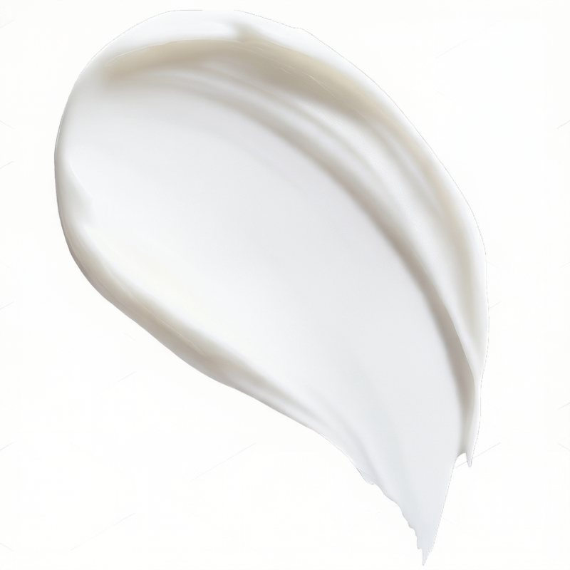

焕能修护系列 · 修护霜
MAX REPAIR CREAM
奶白乳霜冰淇淋质地，上脸如丝绸般丝滑。28 天四阶段强韧敏肌——修肌底、筑肌源、焕肌肤，淡纹紧致，重塑年轻轮廓。

单一的修护无法根本解决屏障受损问题。第二代 Max 修护霜以「四阶段」修护闭环，先精准修护敏感问题，再打造强韧防护盾，最终稳定肌肤状态、加乘年轻新生修护力。

奶白乳霜冰淇淋质地，如丝绸般丝滑，如白玉般清润。
奶白乳霜冰淇淋质地，上脸像丝绸般丝滑、如白玉般清润，滋润直达肌底不浮油。
抗敏舒缓 → 强韧屏障 → 长效维稳 → 抗初老，稳扎稳打完成修护闭环。
人体功效报告：法令纹面积降低 33.78%，眼角纹降低 48.77%，下颌线角度提升 5.38%。
MCRF 丝素蛋白、积雪草、红没药醇、甘草酸二钾、海藻糖
直击泛红、干痒、爆皮、刺痛，减轻炎症反应，舒缓修护敏感肌及屏障受损肌肤
4 重透明质酸钠、3 重神经酰胺、角鲨烷、牛油果树果脂、柑橘果提取物
补水保湿长效锁水，保护皮脂膜，增厚角质层，筑稳屏障防御系统
MCRF 丝素蛋白、黄芩根提取物、燕麦 β-葡聚糖、苦参根提取物
重建原生修护力，提高肌肤耐受度，解决反复敏感，稳定健康肤况
依克多因、海茴香、玻色因、胀果甘草提取物
充盈肌底澎弹紧致，改善老化，抵御紫外线损伤，匀亮肤色
30 位受试者连续使用 14 天，各参数测量值与初始值相比均具有显著性差异（p<0.05）。同期毛孔数量减少 9.35%，苹果肌饱满度提升 3.24%。
以 MCRF 丝素蛋白激活细胞通道，帮助细胞有序排列生长，强化屏障原生修护力；复配玻色因、依克多因等抗老成分，满足敏感肌的多重养肤需求。
取适量修护霜点涂于面部五区。
由内向外轻柔按摩至完全吸收，丝缎质地即刻贴合肌肤。
夏季油皮或晒后，可取厚敷一层作急救修护，10 分钟后轻按吸收。
官方渠道购买，全系列支持防伪查验
官方旗舰店下单，全国顺丰速运
7 天无理由退换，售后全程跟进
1 对 1 肌肤咨询，定制修护方案